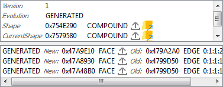

|
Open CASCADE Technology
7.8.0
|
|
|
Open CASCADE Technology
7.8.0
|
|
This manual explains how to use the Inspector.
Inspector is a Qt-based library that provides functionality to interactively inspect low-level content of the OCAF data model, OCCT viewer and Modeling Data. This component is aimed to assist the developers of OCCT-based applications to debug the problematic situations that occur in their applications.
Inspector has a plugin-oriented architecture. The current release contains the following plugins:
| Plugin | OCCT component | Root class of OCCT investigated component |
|---|---|---|
| DFBrowser | OCAF | TDocStd_Application |
| VInspector | Visualization | AIS_InteractiveContext |
| ShapeView | Modeling Data | TopoDS_Shape |
| MessageView | Modeling Data | Message_Report |
Each plugin implements logic of a corresponding OCCT component.
Each of the listed plugins is embedded in the common framework, thus it is possible to manage, which plugins should be loaded by the Inspector, and to extend their number by implementing a new plugin.
There are two launch modes:
Note. If you have no Inspector library in your build directory, make sure that OCCT is compiled with BUILD_Inspector option ON. For more details see Build procedure.
Inspector consists of the following components:
This plugin visualizes the content of TDocStd_Application in a tree view. It shows application documents, the hierarchy of TDF_Labels, the content of TDF_Attributes and interconnection between attributes (e.g. references). Additionally there is a 3D view to visualize TopoDS_Shape elements stored in the document.
OCAF tree view
Each OCAF element has own tree view item:
| Type | Tree item | Text | Description |
|---|---|---|---|
| TDocStd_Application | Application | TDocStd_Application | The root of tree view. Its children are documents. |
| TDocStd_Document | Document | entry : name | A child of Application item. Its children are Label and Attribute items. Text view is an entry of the root label and the value of TDataStd_Name attribute for the label if it exists. |
| TDF_Label | Label | entry : name | A child of a Document or another Label item. Its children and text view are the same as for Document item. |
| TDF_Attribute | Attribute | attribute type [additional information] | A child of a Label. It has no children. Text view is the attribute type *(DynamicType()->Name()* of TDF_Attribute) and additional information (a combination of attribute values). |
Additional information about TDF_Attributes:
| Type | Text |
|---|---|
| TDocStd_Owner | [storage format] |
| TDataStd_AsciiString, TDataStd_Name, TDataStd_Real, other Simple type attributes | [value] |
| TDataStd_BooleanList, TDataStd_ExtStringList, other List attributes | [value_1 ... value_n] |
| TDataStd_BooleanArray, TDataStd_ByteArray, other Array type attributes | [value_1 ... value_n] |
| TDataStd_TreeNode | [tree node ID ==> Father()->Label()] (if it has a father) or [tree node ID <== First()->Label()] (if it has NO father) |
| TDataStd_TreeNode(XDE) | [XDE tree node ID ==> Father()->Label()] (if it has a father), [XDE tree Node ID <== label_1, ..., label_n] (if it has NO father) |
| TNaming_NamedShape | [shape type : evolution] |
| TNaming_UsedShapes | [map extent] |
Custom color of items:
| OCAF element Type | Color |
|---|---|
| TDF_Label | dark green, if the label has TDataStd_Name attribute, light grey if the label is empty (has no attributes on all levels of hierarchy), black otherwise. |
| TNaming_NamedShape | dark gray for TopAbs_FORWARD orientation of TopoDS_Shape, gray for TopAbs_REVERSED orientation of TopoDS_Shape, black for other orientation. |
Context pop-up menu:
| Action | Functionality |
|---|---|
| Expand | Expands the next two levels under the selected item. |
| Expand All | Expands the whole tree of the selected item. |
| Collapse All | Collapses the whole tree of the selected item. |
Property Panel
Property panel is used to display the result of TDF_Attribute::Dump() or TDF_Label::Dump() of the selected tree view item. The information is shown in one table.
Property Panel (custom)
Property panel (custom) is used to display the content of Label or Attribute tree view items or Search result view. The information is usually shown in one or several tables.
TDF_Attribute has the following content in the Property Panel:
| Type | Description | Content |
|---|---|---|
| TDF_Label | a table of [entry or attribute name, value] | |
| TDocStd_Owner, Simple type attributes, List type attributes | a table of [method name, value] | 
|
| TDataStd_BooleanArray, TDataStd_ByteArray, other Array type attributes | 2 controls: - a table of [array bound, value], - a table of [method name, value] | 
|
| TDataStd_TreeNode | 2 controls: - a table of [Tree ID, value] (visible only if Tree ID() != ID() ), - a tree view of tree nodes starting from Root() of the tree node. The current tree node has dark blue text. | 
|
| TDataStd_NamedData | tab bar of attribute elements, each tab has a table of [name, value] | |
| TNaming_UsedShapes | a table of all shapes handled by the framework | |
| TNaming_NamedShape | 2 controls: - a table of [method name, value] including CurrentShape/OriginalShape methods result of TNaming_Tools, - an evolution table. Tables contain buttons for TopoDS_Shape export. |

|
| TNaming_Naming | 2 controls: - a table of TNaming_Name values, - a table of [method name, value] |
Dump view

Dump view shows the result of TDF_Attribute::Dump() or TDF_Label::Dump() of the selected tree view item.
3D view
3D View visualizes TopoDS_Shape elements of OCAF attribute via AIS facilities.
DFBrowser creates two kinds of presentations depending on the selection place:
| Kind | Source object | Visualization properties | View |
|---|---|---|---|
| Main presentation | Tree view item: TPrsStd_AISPresentation, TNaming_NamedShape, TNaming_Naming | Color: a default color for shape type of the current TopoDS_Shape. | 
|
| Additional presentation | References in Property panel | Color: white | 
|
Tree Navigation
Tree Navigation shows a path to the item selected in the tree view. The path is a sequence of label entries and attribute type names. Each element in the path is selectable - simply click on it to select the corresponding tree view item.
Navigation control has buttons to go to the previous and the next selected tree view items.
Update Button
Update button synchronizes content of tree view to the current content of OCAF document that could be modified outside.
Search
The user can search OCAF element by typing:

As soon as the user confirms the typed criteria, the Property panel is filled by all satisfied values. The user can click a value to highlight the corresponding tree view item. By double click the item will be selected.
Tree item selection
Selection of tree view item updates content of the following controls:
Property Panel (custom) item selection
If the property panel (custom) shows content of TDF_Label:
If the property panel (custom) shows content of TDF_Attribute that has reference to another attribute, selection of this reference:
Attributes having references:
| Type | Reference | Additional presentation |
|---|---|---|
| TDF_Reference | TDF_Label | |
| TDataStd_ReferenceArray, TDataStd_ReferenceList, TNaming_Naming | One or several TDF_Label in a container. | |
| TDataStd_TreeNode | TDF_Label | |
| TNaming_NamedShape | TDF_Label in Evolution table | TopoDS_Shapes selected in the property panel tables. |
| TNaming_UsedShapes | one or several TNaming_NamedShape | TopoDS_Shapes of the selected TNaming_NamedShape. |
Property panel of TNaming_NamedShape attribute has controls to export TopoDS_Shape to:
This plugin visualizes interactive objects displayed in AIS_InteractiveContext in a tree view with computed selection components for each presentation. It shows the selected elements in the context and allows selecting these elements.
Presentations tree view
This view shows presentations and selection computed on them. Also, the view has columns with information about the state of visualization elements.
VInspector tree items.
| Type | Description |
|---|---|
| AIS_InteractiveContext | The root of tree view. Its children are interactive objects obtained by DisplayedObjects and ErasedObjects methods. |
| AIS_InteractiveObject | A child of AIS_InteractiveContext item. Its children are SelectMgr_Selection obtained by iteration on CurrentSelection. |
| SelectMgr_Selection | A child of AIS_InteractiveObject. Its children are SelectMgr_SensitiveEntity obtaining by iteration on Sensitive. |
| SelectMgr_SensitiveEntity | A child of SelectMgr_Selection. Its children are SelectMgr_SensitiveEntity obtaining by iteration on OwnerId. |
| SelectBasics_EntityOwner | A child of SelectMgr_SensitiveEntity. It has no children. |
Custom color of tree view items:
| OCAF element Type | Column | What | Color |
|---|---|---|---|
| AIS_InteractiveObject | 0 | Text | dark gray in ErasedObjects list of AIS_InteractiveContext, black otherwise |
| AIS_InteractiveObject, SelectMgr_SensitiveEntity, SelectBasics_EntityOwner | 1 | Background | dark blue, if there is a selected owner under the item, black otherwise |
| SelectMgr_Selection, SelectMgr_SensitiveEntity, electBasics_EntityOwner | all | Text | dark gray, if SelectionState of SelectMgr_Selection is not SelectMgr_SOS_Activated, black otherwise |
Context popup menu in tree view:
| Action | Item | Functionality |
|---|---|---|
| Export to ShapeView | AIS_InteractiveObject | Exports TopoDS_Shape of the AIS_Interactive presentation to ShapeView plugin. It should be AIS_Shape presentation and ShapeView plugin should be registered in Inspector Dialog about exporting element to ShapeView is shown with a possibility to activate this plugin immediately. |
| Show | AIS_InteractiveObject | Displays presentation in AIS_InteractiveContext. |
| Hide | AIS_InteractiveObject | Erases presentation from AIS_InteractiveContext. |
Update
This button synchronizes the plugin content with the current state of AIS_InteractiveContext and updates the presence of items and their current selection.
VInspector marks the presentations currently selected in AIS_InteractiveContext with a blue background in tree items. Use Update button to synchronize VInspector selected items state to the context.
It is also possible to perform selection in the context using "Selection controls" VInspector feature. However, this operation should be performed carefully as it clears the current selection in AIS_InteractiveContext.
Selection change:
| From | To | Action | Result |
|---|---|---|---|
| AIS_InteractiveContext | VInspector | Performs selection in AIS_InteractiveContext. | Click Update button in VInspector and check Selection column: AIS_InteractiveContext item contains some selected objects, the value of some AIS_InteractiveObject is filled if they are selected for this presentation or its entity owner. |
| VInspector | AIS_InteractiveContext | Activates one of Selection controls and selects one or several elements in the tree view. | The objects become selected in AIS_InteractiveContext. |
Use context pop-up menu on the tree view header to select, which columns should be displayed.
Use the setting Lights (position, color) in the view.
Property panel shows the result of AIS_InteractiveContext::Dump() or AIS_InteractiveObject::Dump().
This plugin visualizes content of TopoDS_Shape in a tree view.
Property panel shows properties for TopoDS_Shape based on DumpJson.
TopoDS_Shape View
The view elements are TopoDS_Shape objects. The shape is exploded into sub-shapes using TopoDS_Iterator of the TopoDS_Shape. Children sub-shapes are presented in the view as children of the initial shape. By iterating recursively through all shapes we obtain a tree view of items shown in the ShapeView.
The columns of the View show some information about TopoDS_Shape of the item. The first column allows changing the visibility of the item shape in the 3D view.
Context pop-up menu in tree view:
| Action | Functionality |
|---|---|
| Load BREP file | Opens the selected file and appends the resulting TopoDS_Shape into the tree view. |
| Remove all shape items | Clears tree view. |
| BREP view | Shows the text view with BREP content of the selected item. Creates the BREP file in a temporary directory of the plugin. |
| Close All BREP views | Closes all opened text views. |
| BREP directory | Displays the folder, where temporary BREP files have been stored. |
Selection of one or several items in TopoDS_Shape View creates its AIS_Shape presentation and displays it in the 3D View.
Use context pop-up menu on the tree view header to select, which columns should be displayed.
MessageView plugin is used to display content of Message_Report.
Message report tree view shows the content of the Message_Report.
Context pop-up menu in message report tree view:
| Action | Functionality |
|---|---|
| Export Report | Exports the report as json file. |
| WallClock Metric statistic | Creates the table that sums the number of calls and the time spent on the functionality inside the value and shows it in Property panel (custom). It's necessary to activate "WallClock metric". |
| Preview children presentations | Displays presentations of children items of selected items if found. |
| Deactivate | Deactivates all types of metrics for the current report. |
| Activate | Appends items to activate report metrics. |
| Clear | Clears message report. |
| Activate metric | Switches active state in report for clicked type of metric. |
| Test metric | Sends several alerts to check metric of message-alert-tool mechanism. |
| Test Message_Messenger | Sends several alerts to check property panel/presentations of messenger-alert-tool mechanism. |
| Test Tree of messages | Sends several alerts to check tree of alerts. |
3D View shows the selected item (TopoDS_Shape) in message report tree view.
Shows Dump() information of the selected item if the item has Dump().
Shows the table for WallClock Metric statistic option.
This control shows presentation hierarchy of the investigated OCCT element, e.g. TDocStd_Application for DFBrowser, see Overview. The first column contains the name, other columns are informative.
The tree view has a context menu with plugin-specific actions.
It is possible to define visibility and width of columns. This option is available in a view that contains more than one column, e.g. VInspector tree view columns and ShapeView tree view columns.

This control for OCCT 3D viewer creates visualization view components and allows performing some user actions in the view.
3D View contains the following elements:
| Element | Functionality |
|---|---|
| 3D view | V3d viewer with mouse events processing. |
| Context | Allows choosing another context that should be used in the plugin. The following contexts are available: Own - the context of this view, External - the context of the external application, which initializes the plugin, None - the visualization is not performed at all (useful if the presentation is too complex). |
| Multi/Single | The buttons define what to do with the previously displayed objects: Multi displays new presentations together with already displayed ones, Single removes all previously displayed presentations. |
| Clean | Removes all displayed presentations. |
| Trihedron display | Shows the trihedron. |
| View cube display | Shows the view cube. |
| Fit All | Scene manipulation actions (Fit All is checkable. If checked(by double click), display/hide of new objects will perform Fit All of the scene.) |
| Display Mode | Sets AIS_Shading or AIS_WireFrame display mode for all presentations. |
Context popup menu:
| Action | Functionality |
|---|---|
| Set View Orientation | Shows the list of available V3d_View projections. Selection of an item with change the view. |
View preferences store the current view orientation.

Context menu contains:
| Element | Functionality |
|---|---|
| Tree Level Line, PropertyPanel, PropertyPanel (custom), Dump, View | Names of dock widgets in the active plugin. If the button is checked, dock widget is visible. |
| Store Preferences | Creates ".tinspector.xml" preferences file with the current settings for each plugin. This file is created in TEMP/TMP directory (by default) or in a user-defined directory. |
| Remove Preferences | Removes preferences file. After the Inspector is restarted, default values will be applied. |
The following controls have store/restore preferences:
| Element | Preferences |
|---|---|
| Geometry | Inspector window size and position. State of dockable widgets : visibility, position, size. |
| Tree View preferences | Columns visible in the tree view and their width. |
| 3D View preferences | 3D view camera direction. |
This sample allows trying Inspector functionality.
Use inspector.bat script file placed in a binary directory of OCCT to launch it.
This script accepts the names of plugin's DLL that should be loaded. By default it loads all plugins described above.
Click on the Open button shows the dialog to select a file.
Depending on the active plugin, it is possible to select the following files in the dialog:
Click the file name in the proposed directory and enter it manually or using Browse button.
By default, TInspectorEXE opens the following files for plugins:
| Plugin DLL library name | Files |
|---|---|
| TKDFBrowser | step/screw.step |
| TKVInspector | occ/hammer.brep |
| TKShapeView | occ/face1.brep, occ/face2.brep |
These files are found relatively to CSF_OCCTDataPath.
The application stores recently loaded files. On the application start, the last file is activated. Open file dialog contains recently loaded files. Selection of a new file updates the container of recently loaded files and rewrites preferences.
Source code of TIspectorEXE is a good sample for using the Inspector in a custom application.
TKToolsDraw plugin provides DRAW commands for Qt tools. Use INSPECTOR parameter of pload command to download the commands of this library. It contains tinspector command to start Inspector under DRAW. See more detailed description of the tinspector command.
The simple code to start Inspector with all plugins loaded:
This command does the following:
After this, we should create objects in DRAW and update tinspector. The examples of using Inspector in DRAW can be found in OCCT source directory /tests/tools.
The example of using the Inspector in a custom application is presented in OCCT qt sample - FuncDemo. For building qt samples, switch on BUILD_SAMPLES_QT variable in Configuration process.
In general, the following steps should be taken:
Here is an example of C++ implementation:
Give one the following objects for a plugin using a container of parameters:
| Plugin | to be initialized by |
|---|---|
| TKDFBrowser | TDocStd_Application |
| TKVInspector | AIS_InteractiveContext |
| TKShapeView | TopoDS_TShape |
| TKMessageView | Message_Report |
By default the Inspector compilation is off. To compile it, set the BUILD_Inspector flag to "ON". See Configuration process.
When this option is switched ON, MS Visual Studio project has an additional tree of folders:
OCCT sources are extended by the /tools directory.
Distribution of plugin packages :
| Source packages | Plugin |
|---|---|
| DFBrowser, DFBrowserPane, DFBrowserPaneXDE, TKDFBrowser | DFBrowser |
| VInspector, TKVInspector | VInspector |
| ShapeView, TKShapeView | ShapeView |
| MessageView, TKMessageView | MessageView |
Other packages:
| Source packages | Used in |
|---|---|
| TInspectorAPI, TKInspectorAPI | Interface for connection to plugin. |
| ViewControl, TKTreeModel | Classes for property view, table, table model. |
| TreeModel, TKTreeView | Items-oriented model to simplify work with GUI tree control. |
| View, TKView | 3D View component. |
| TInspector, TKTInspector | Inspector window, where plugins are placed. |
| ToolsDraw, TKToolsDraw | Plugin for DRAW to start Inspector. |
In MSVC studio, a separate folder contains Inspector projects.
 1.8.18
1.8.18